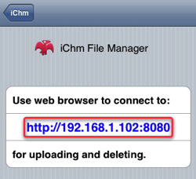
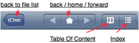

1. Before uploading, please make sure you have Wi-Fi connection for your iPhone/iPod Touch.
2. In the root view of iChm for iPhone, click on the button "manager" on the top left corner of the view.
3. After the file manager is launched, you can see an URL in the page like "http://xxx.xxx.xxx:8080".
4. In your desktop machine (PC or Mac), launch your web browser (IE, Firefox or Safari). Type the URL shown on the page into the URL bar and load.
5. After you connect to the address, you will see a file manager in your browser.
6. Choose a file from your desktop machine and click "upload" to upload the file to your iPhone.
7. You can see a progress indicator on iPhone during uploading. When the uploading finished, a notice will be shown.
8. Click on button 'iChm' on iPhone and go back to the root view of iChm. The file manager will be turn off by this way.
1. In the root view, click on the file name to load the file in iChm.
2. Here's the buttons on the navigation bar of the reader. It takes some time to load the "Table of Content" and "Index" and the buttons will show after loading. If there's no table of content and index in the CHM file, the buttons will be grayed out.
3. Clicking on the "Table of Content" button brings you to the section of the current page in table of content.
4. Clicking on the "Index" button brings you to the index viewer. You can navigate or search keywords in the index viewer.
Why I get "http://(null):8080" in the File Manager page? I can not connect to that URL.
Please make sure you have Wi-Fi connection to your device. Check it in the Wi-Fi section in "Settings" of iPhone OS.
Why some special chars aren't printed correctly?
Some chm files set the locale id which is not compatible with the actual test encoding. It makes some characters printed incorrectly.
Where can I get support if I have more question?
Please put your question into iChm issue tracker at http://groups.google.com/group/ichm-iphone.